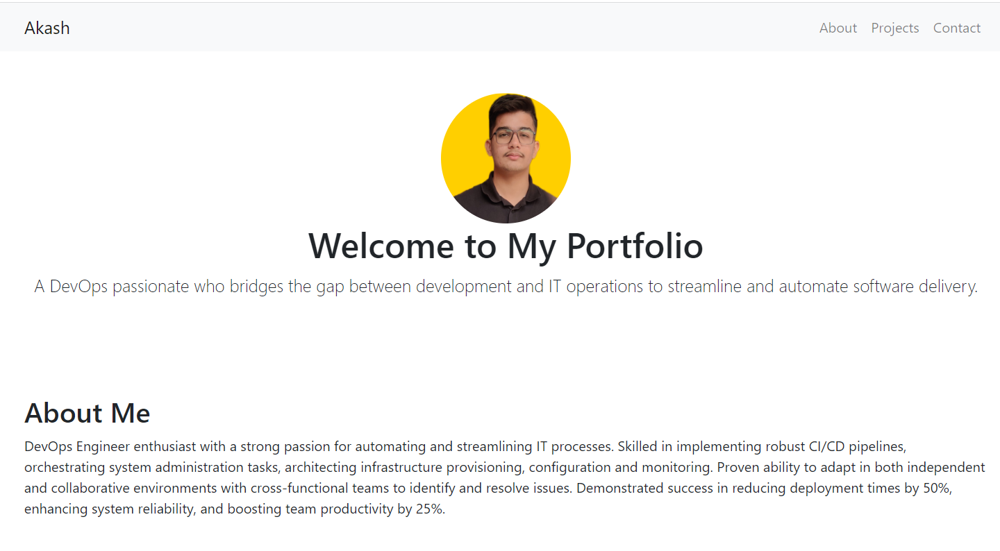
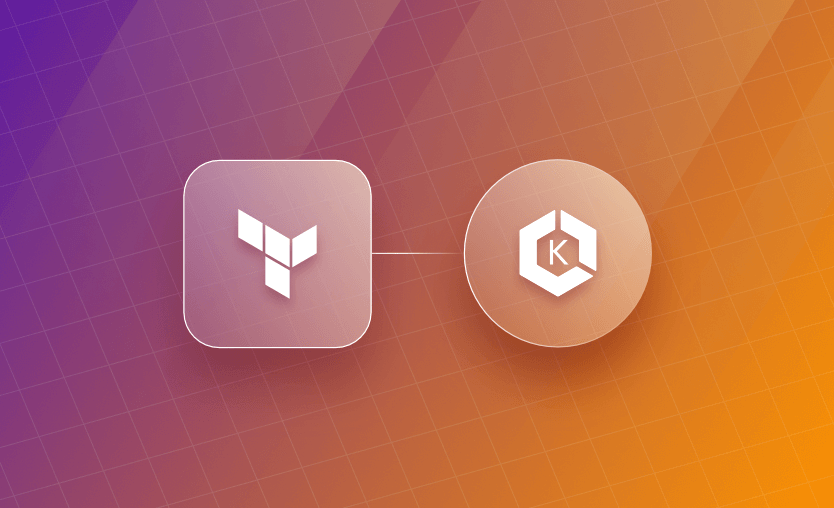
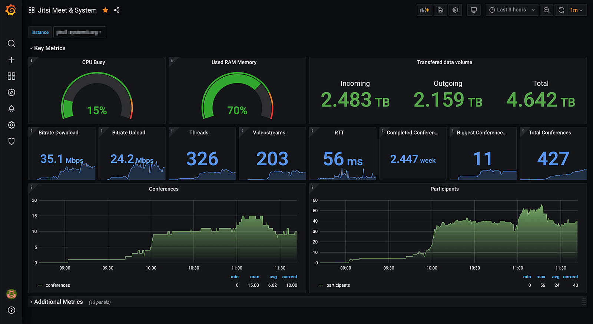
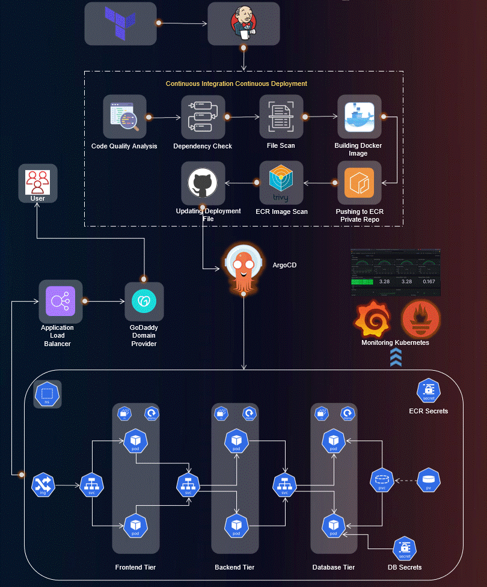

A DevOps passionate who bridges the gap between development and IT operations to streamline and automate software delivery.
DevOps Engineer enthusiast with a strong passion for automating and streamlining IT processes. Skilled in implementing robust CI/CD pipelines, orchestrating system administration tasks, architecting infrastructure provisioning, configuration and monitoring. Proven ability to adapt in both independent and collaborative environments with cross-functional teams to identify and resolve issues. Demonstrated success in reducing deployment times by 50%, enhancing system reliability, and boosting team productivity by 25%.

Developed and implemented a CI/CD pipeline for a portfolio web application using Jenkins, GitHub, AWS, and Docker. The pipeline automates the build and deployment process for the web application, ensuring that new changes are released to production quickly and reliably.

Architected and deployed a production-ready Kubernetes platform on AWS EKS using Terraform, emphasizing scalability, security, and modular Infrastructure as Code practices. This project simulates a real-world enterprise-grade cloud environment used in modern DevOps teams

Implemented a server monitoring solution by utilizing Grafana as the visualization platform and AWS CloudWatch as the data source. Designed informative dashboards to gain valuable insights into the performance and health of AWS EC2 servers.

End-to-end DevOps project deploying a three-tier React, Node.js, and MongoDB application on AWS EKS. Features Terraform-based IaC, Jenkins CI/CD pipelines, ArgoCD GitOps, Helm, and monitoring with Prometheus and Grafana.
If you'd like to get in touch, feel free to contact me: